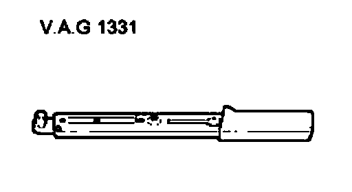
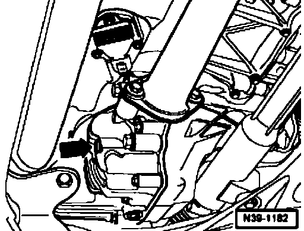

Front Final Drive Gear Oil, Checking
Front final drive gear oil, checking
Special tools and equipment required

^ Torque wrench V.A.G 1331
Gear oil specification

- Remove plug (arrow) to check oil
The oil level is correct when the front final drive is filled to the lower edge of the filler hole.
- Screw in plug (arrow) with new seal.
Tightening torque: 35 Nm
When filling with new oil note following:
- Remove plug (arrow).
- Top up oil to lower edge of filler hole.
- Screw in plug (arrow) with new seal. Tightening torque: 35 Nm